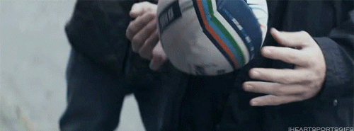

Welcome to the home page of my Portfolio

Welcome to the home page of my Portfolio CA. This CA should begin to show how I have experienced and adapted through my college career in the world of computing. My name is Rhys Grainger, i hwas given the x number x00162031 in first year on day one with my student card. The course I gained entry to was Computing in first year. I had a little experience in computing and coding but I had vast interest in coding, programing, computational desgin and web design going into first year.
After first year we could specify into different streams, the stream or decipline that I choose was software development. Over the course of many hours and hours of work and practice I have now made it into fourth year where i have numerous different resutlts and grades to choose from for this project
I hope you enjoy this Portfolio please feel free to look at other topics on the page!

Education

The below selection shows the last 3 years of subjects in which i took part in.
it shows the years, 2021, 2020, 2019. Some resutlts were better than others but it enabled me to get to 4th year now
Please select which year you would like to view in more detail.
2021 resutlts
| Subject | Grade | Pass |
|---|---|---|
| Software development | B | True |
| Business Studies | C | True |
| Algorithims | B- | True |
2020 resutlts
| Subject | Grade | Pass |
|---|---|---|
| Software development | C | True |
| Maths | A | True |
| Advanced Databases | A | True |
2019 resutlts
| Subject | Grade | Pass |
|---|---|---|
| Software development | C | True |
| Computer Architecture | C+ | True |
| Web Design | A | True |
Work Placement
The company where I did my semester long work placement was a company called Nostra Nostra is an IT provider and security company to thousands of companies across Ireland, parts of the UK and United States.
Envirnoment
Nostra's offices were located in Park West Business Park outside the Red Cow The offices in which I was given a desk and my own little work envirnoment was very comfortable and focusing. I had the ability to be able to work from home as well after my first two months of the work placement as this should they had trust in me
Work Load
I was set up in the service engineer role in Nostra. I was put in the green pod which meant that the companies under the green pod where part of my responsibility. A key role of my job there was maintaining firewall and active directory access for companies that we maintained the security for. If the security was comprised we had to make sure that the breaches were contained and that no files such as the accountancy books were harmed at all.
Key Moments
I had several interesting moments in time with Nostra. As i was a technical engineer and have a full drivers license i was often sent on site to help fix issues. For example one time I was sent on site for 8 hours fixing server rooms and setting up active directory accounts out there for the company as there site had been temparily gone offline. It was valuable experience in which i learned a great deal.
Projects
2nd year project
The first project that i did was in second year. I had to do it with three other of my class mates in order to make sure we fulfilled the required metrics. what we had to do was build an online shopping application where we had steps to follow through but also had to make up functionality of our own. The extra functionality that we had to show was of our own creation. We made a wishlist in which consumers could add an item to the wishlist by hitting a liked button another was a review feature on the end of every product that we had in the shop. we used the card function from boostrap to show both positive and negative comments The more functionality that was required was a stripe payment, checkout, a thank you page, product and category pages and a login page to make sure everything was working correctly.
4th year project
The second project of my college career is a fourth year project that i am currently in the process of creating. This project is a bit trickier than the last one mentioned above. This project has to be thought up, written, created and presented by myself without anyone elses input. This makes it quite the daunting task. What I plan to do in this project is create a real time chat application using the python framework Django. I wanted to style and base my project similar to whatsapp and facebook messenger as they are universally used all over the world. I would be using parts of boostrap in the front end and django-websockets to allow me to conenct the front end to the back end. I am hoping to implment a feature to be able to send emojis and other images to allow me to have a better functionality.
Sports n hobbies

One of my main achievements that i have done in my time in college is win the Division 1 All Ireland Rugby League This was the second time in consecutive years that I have done it with TUD. This year we beat Althone IT by a point to win the league final Having not being able to play rugby for the college for the first two years thanks to covid it was nice to be able to bring home some silverware. In the following semester we have the the cup final. I am hoping that we can do the double for the first time in the college's history. Being from Wales originally, rugby was always a big thing for me and i am proud to represent the college.
Contact page
Enter your details below so that i can get intouch with you or click the button below and contact my details.